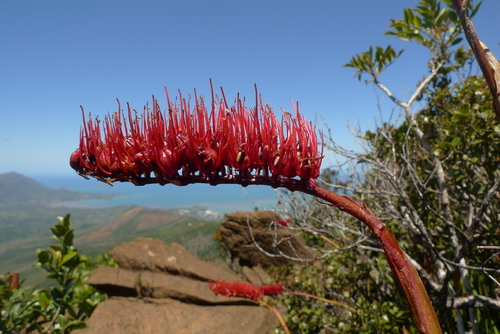

Xeronemataceae
(No widely accepted common name)
Xeronemataceae is a small family of monocotyledonous flowering plants containing the single genus Xeronema. These robust perennial herbs grow from rhizomes and possess linear, iris-like leaves arranged in fans. They are renowned for their striking, dense, "bottlebrush" inflorescences of bright red or orange flowers borne on tall stalks. The family has a very restricted distribution, endemic to specific islands of New Zealand and New Caledonia.
Overview
Xeronemataceae is a very small and geographically isolated family, comprising only two species within the single genus Xeronema. These species are remarkable endemics: Xeronema callistemon is found only on the Poor Knights Islands and Taranga Island off the coast of New Zealand's North Island, while Xeronema moorei is restricted to the island of New Caledonia.
These plants typically grow in rocky habitats, often on cliffs, rock crevices, or amongst coastal scrub, where they can form large clumps via their rhizomatous growth. Their tough, iris-like leaves and spectacular bottlebrush flower spikes make them visually distinctive. Their restricted distribution and unique appearance make them of significant interest for biogeography and conservation.
While not economically important, they are occasionally cultivated in specialist gardens in mild climates, valued for their dramatic floral displays and architectural foliage. Phylogenetically, they belong to the large monocot order Asparagales.
Quick Facts
- Scientific Name: Xeronemataceae
- Common Name: (No widely accepted common name)
- Number of Genera: 1 (Xeronema)
- Number of Species: 2
- Distribution: Endemic to Poor Knights Islands & Taranga Island (New Zealand) and New Caledonia.
- Evolutionary Group: Monocots - Order Asparagales
Key Characteristics
Growth Form and Habit
Robust, clump-forming perennial herbs growing from thick, creeping rhizomes.
Leaves
Leaves are basal, arranged in two ranks (distichous) and overlapping at the base in a fan-like manner (equitant), similar to an iris. They are linear or sword-shaped, somewhat fleshy or leathery, with smooth margins and parallel venation. Stipules are absent.
Inflorescence
The inflorescence is a dense, erect, spike-like raceme borne on a long, stout stalk (scape) that emerges from the leaf fan. It has a characteristic "bottlebrush" appearance due to the numerous, densely packed flowers, which are often arranged spirally or secundly (projecting mainly to one side). Floral bracts are present.
Flowers
Flowers are bisexual and typically radially symmetrical (actinomorphic), although sometimes described as slightly zygomorphic due to stamen arrangement or curvature.
- Perianth: Consists of 6 petaloid tepals arranged in two similar whorls (3+3). The tepals are usually free or slightly fused only at the very base, typically linear or narrowly lance-shaped, and brightly colored (usually red or orange-red).
- Androecium: Stamens 6, typically exserted (projecting beyond the tepals). Filaments are attached near the base of the tepals. Anthers are attached at their base (basifixed) or near the base on their back (dorsifixed) and open via longitudinal slits to release pollen.
- Gynoecium: Ovary is superior, composed of 3 fused carpels forming a 3-locular ovary. Placentation is axile (ovules attached to the central axis within each locule). Ovules are numerous. There is a single, slender style topped by a small, simple or slightly 3-lobed stigma.
Fruits and Seeds
The fruit is a loculicidal capsule, meaning it splits open along the midline of each of the three locules to release the seeds. Seeds are numerous, small, often black, and typically angled or somewhat flattened. They contain endosperm.
Chemical Characteristics
Detailed chemical studies are limited due to the rarity and restricted distribution of the family. Like many Asparagales, they may contain steroidal saponins, but they are not known for particularly distinctive chemical profiles.
Field Identification
Identifying Xeronemataceae is relatively straightforward due to its unique combination of features and extremely limited geographic range.
Primary Identification Features
- Habit: Robust perennial herb from a rhizome.
- Leaves: Basal, iris-like (equitant, distichous, linear/sword-shaped).
- Inflorescence: Dense, erect, "bottlebrush" spike/raceme of numerous flowers on a tall scape.
- Flowers: Bright red or orange-red, 6 tepals, 6 stamens, superior ovary.
- Distribution: Extremely restricted to specific islands in New Zealand and New Caledonia.
Secondary Identification Features
- Habitat: Typically rocky cliffs, crevices, or coastal scrub.
- Fruit: 3-valved capsule.
- Tepals: Usually linear/narrowly lance-shaped.
Seasonal Identification Tips
- Flowering: Typically occurs in spring and summer (in their respective hemispheres), when the bottlebrush inflorescences are highly conspicuous.
- Vegetative: The distinctive iris-like leaf fans are present year-round.
Common Confusion Points
Given its unique appearance and location, confusion is unlikely in the wild. Potential confusion based on general form might include:
- Iridaceae (Iris family): Share similar equitant leaves, but flowers typically have only 3 stamens and an inferior ovary.
- Asphodelaceae (e.g., Kniphofia - Red Hot Poker): Some species have dense, spike-like inflorescences of red/orange flowers, but leaves are often more succulent or grass-like (not typically equitant), flower structure differs (often tubular perianth), and distribution is different (mostly Africa).
- Bromeliaceae (Pineapple family): Some terrestrial bromeliads have linear leaves and colorful inflorescences, but they belong to a different order (Poales), often form rosettes (not distinct fans), and have different floral/fruit structures.
The combination of equitant leaves, superior ovary, 6 stamens, the specific bottlebrush inflorescence structure, and the highly restricted endemic distribution makes Xeronemataceae unmistakable.
Field Guide Quick Reference
Look For:
- Robust herb with rhizomes
- Basal, iris-like leaves (equitant)
- Dense "bottlebrush" inflorescence
- Red/orange flowers
- 6 tepals, 6 stamens
- Superior ovary
- Endemic to NZ islands / New Caledonia
Key Variations:
- Specific flower color shade
- Overall plant size (varies between the 2 species)
- Inflorescence density/length
Notable Examples
The family contains only two known species in the genus Xeronema.

Xeronema callistemon
Poor Knights Lily
Endemic to the Poor Knights Islands and Taranga Island off New Zealand's coast. Features spectacular, one-sided (secund) bottlebrush inflorescences of bright red flowers with prominent stamens. Grows on coastal cliffs and rock outcrops.

Xeronema moorei
(No common name)
Endemic to the island of New Caledonia. Similar in habit to its New Zealand relative, forming clumps of iris-like leaves. The inflorescence is also a dense, bottlebrush-like spike, typically with red or orange-red flowers arranged more spirally around the axis compared to the one-sided arrangement in X. callistemon.
Phylogeny and Classification
Xeronemataceae is placed within the large monocot order Asparagales. This order encompasses a vast array of familiar plants, including asparagus, onions, irises, orchids, agaves, aloes, and hyacinths. Asparagales is characterized by features like simultaneous microsporogenesis and phytomelanin (a black crust) often present in the seed coat, although the latter is absent in Xeronemataceae.
Within Asparagales, Xeronemataceae belongs to the core "higher" Asparagales clade. Its precise sister relationship has been debated in phylogenetic studies, but it is generally considered to be closely related to a group including Asphodelaceae (which now often includes Xanthorrhoeaceae and Hemerocallidaceae), Amaryllidaceae (which now includes Alliaceae and Agapanthaceae), and Asparagaceae (a huge family now including Agavaceae, Hyacinthaceae, Ruscaceae, etc.). The exact placement relative to these large families requires further research, but its position within this major clade of Asparagales is well-supported.
Position in Plant Phylogeny
- Kingdom: Plantae
- Clade: Angiosperms (Flowering plants)
- Clade: Monocots
- Order: Asparagales
- Family: Xeronemataceae
Evolutionary Significance
Despite its small size, Xeronemataceae holds evolutionary interest:
- Isolated Lineage: Represents a distinct and geographically isolated branch within the diverse Asparagales order.
- Biogeography: Its disjunct distribution between New Zealand islands and New Caledonia is a classic example suggesting ancient vicariance or long-distance dispersal events related to the breakup of Gondwana or subsequent geological history.
- Morphological Uniqueness: The combination of iris-like leaves with a dense, bottlebrush inflorescence of red/orange flowers is unusual within Asparagales, highlighting morphological diversification within the order.
- Island Endemism: Provides a case study in the evolution and conservation of narrowly endemic island flora.